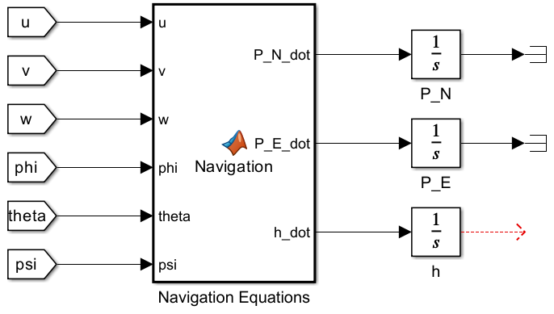
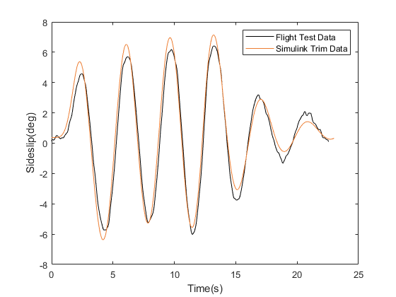
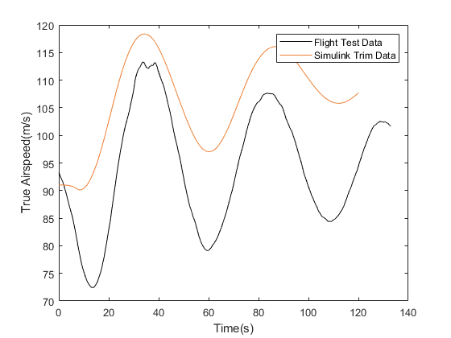
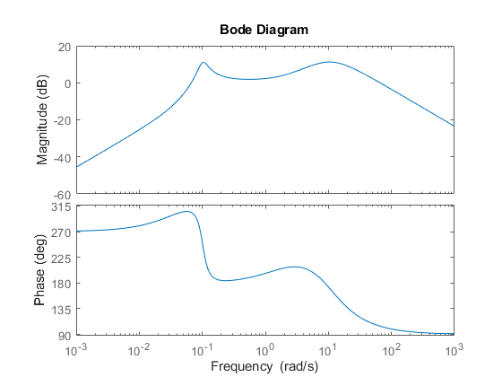

Problem
The goal was to build a full six-degree-of-freedom (6DOF) Simulink model of Cranfield's research Saab 340B, G-NFLB, a twin-turboprop aircraft the university flies for hands-on flight test teaching. Then prove it behaves like the real aircraft, using real flight test data rather than just simulation self-consistency. The assignment supplied a pre-built aerodynamic and propulsive "Forces & Moments" subsystem, adapted from Cranfield's earlier Jetstream 31 model using the Wolowicz & Yancey method for propeller-slipstream effects, plus flight test recordings of five classical dynamic modes: phugoid, short-period pitching oscillation, roll subsidence, spiral and Dutch roll. The kinematic and navigation equations, trim, linearisation, mode decoupling and frequency-response analysis were all my own individual work, submitted as an individual report under the module's assessment rules.
Approach
I assembled the standard 6DOF Euler-angle simulation by wiring the supplied Forces & Moments block into a translational/rotational acceleration stage and a set of kinematic equations. Then I wrote the navigation equations block myself from scratch, integrating body rates into position and altitude.

With the nonlinear model running, I trimmed it to a steady, level flight condition,
iterating on elevator, throttle and state values in Simulink until the states held flat
over a run of several seconds. That's what confirms a converged trim rather than a
slowly drifting near-trim. I linearised the trimmed model about that point with
linmod, decoupled the resulting 12-state system into a 4-state longitudinal
and a 5-state lateral/directional model, and computed the eigenvalues of each to
characterise the aircraft's natural modes. Both decoupled state-space models were then
converted to transfer functions, and I generated Bode plots for the pitch, roll and yaw
channels to predict handling qualities in the frequency domain, following the
MIL-HDBK-1797 approach the assignment pointed to.
To validate all of this against reality, I replayed the actual control inputs recorded during Cranfield's Saab 340B flight tests (phugoid, short-period, roll subsidence and Dutch roll manoeuvres) through the trimmed nonlinear model, and overlaid the simulated response against the flight test time history for the same state.
Result
The longitudinal eigenvalues split cleanly into the two modes classical flight dynamics predicts: a fast, heavily-damped short-period pair, and a slow, lightly-damped phugoid pair sitting close to the imaginary axis. That's consistent with a light twin-turboprop's typical handling.

Validation against flight test was mode-dependent. Dutch roll matched closely in both frequency and amplitude decay over the full recorded run. It's the clearest evidence the lateral/directional model captures the real aircraft's dynamics well:

The phugoid was less clean. The model got the roughly 25–30 s period right, but the amplitude and a slowly-growing offset pulled apart from the flight data as the run went on. That's the kind of drift you'd expect from a very lightly-damped mode: small aerodynamic-derivative errors compound over an open-loop comparison with no pilot or controller closing the loop:

The frequency-domain analysis backed this up: the pitch-rate-to-elevator Bode plot showed a distinct low-frequency phugoid resonance feeding into a broader short-period peak, consistent with the time-domain eigenvalue split above.

Limitations
The supplied aerodynamic model is itself an approximation, adapted from a different aircraft (the Jetstream 31) via a published propeller-slipstream method rather than measured directly on the Saab 340B. Any error in that base model propagates straight into the mismatches seen above, most visibly the phugoid amplitude drift and a trim angle-of-attack offset in the short-period comparison. That offset likely reflects a small trim mismatch at that specific flight condition, not a modelling error in the dynamics themselves. The nonlinear-vs-flight-test comparisons also used open-loop control inputs replayed from the flight test log, with no pilot or feedback model, so small timing or trim mismatches compound over longer runs. That's visible in the roll-mode response drifting apart after the first ~10 seconds. Trim and validation were only carried out rigorously at the one flight condition the linear model was built around, not across the full trim table provided. The optional integrated UI, worth no marks, wasn't attempted.